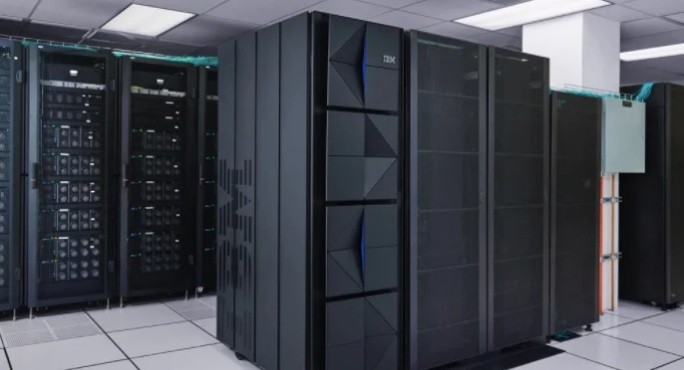
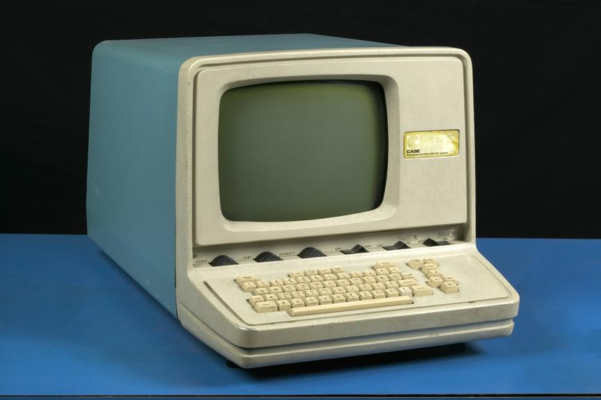
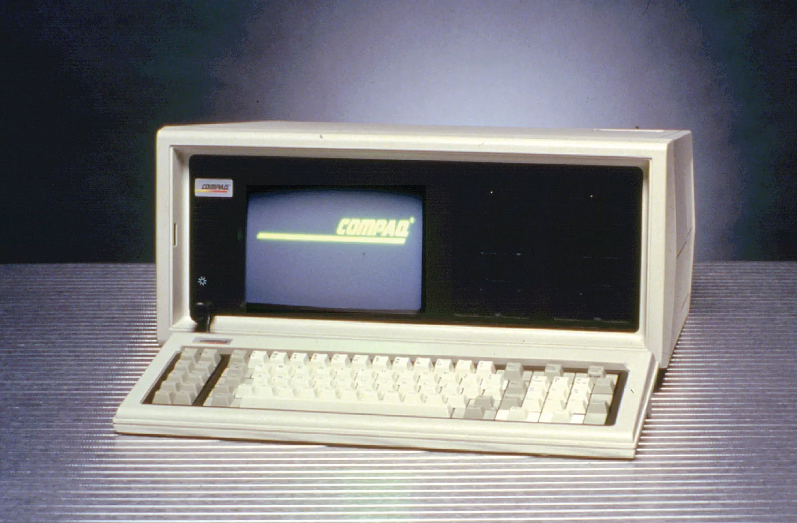

Czachary Xavier C. Villarin
BS Computer Science 1
Different Types of Computers
Introduction
Computers vary widely in type, each tailored to meet specific needs and challenges across various fields. This comparative study explores the features, differences, and optimal uses of different computer types, providing a clearer understanding of their distinct purposes and helping inform decisions on the most suitable options for particular tasks.
Discussion
-
Supercomputers
- Most powerful and expensive computers.
- Capable of performing quadrillions of calculations per second.
- Essential in fields like scientific research, artificial intelligence, defense, and industrial design.
- Used in multimedia development, such as rendering digital animations for the film industry.
- Processing speeds continue to increase, enabling the completion of complex tasks.
-
Mainframe Computers
- Powerful multiuser systems used by large organizations (e.g., banks, hospitals, government offices).
- Manage databases, financial transactions, and communications.
- Can process billions of instructions per second.
- Support hundreds of users and store terabytes of data.
- Costly and require dedicated support staff.
-
Mini Computers
- More powerful than microcomputers but less powerful than mainframes.
- Support multiple users simultaneously.
- Used as servers in network environments.
- Applied in industries such as business, education, healthcare, and research.
- Ideal for medium-scale computing needs, offering a balance of power and affordability.
-
Server Computers
- Manage data, devices, and networks.
- Provide specialized services like hosting websites and handling emails.
- Handle complex tasks, including managing multiple user queries and processing intensive workloads.
- Operate within a client-server model, where the server provides resources to client devices over a network.
-
Workstations
- Designed for resource-intensive applications.
- Provide enhanced processing power, memory, and storage compared to personal computers.
- Equipped with advanced graphics cards, multi-core processors, and high-resolution displays.
- Essential for tasks like 3D modeling, simulations, and data analysis.
- Support complex software and multitasking, making them indispensable in professional environments.
-
Microcomputers
- Contain a microprocessor as the CPU, executing arithmetic and logic functions.
- Integrate memory, microprocessor, and input/output components on a single printed circuit board.
- Originally referred to personal computers with a single integrated semiconductor chip in the CPU (1970s-1980s).
- Modern microcomputers feature multiple semiconductor chips for faster multitasking.
- Now come in various forms, including servers, smartphones, and desktop computers.
Table 1
Comparison of Computer Types and Specifications| Type of Computer | Name/Brand | Build | CPU | Memory | Processing Speed | Calculating Power | Working Principle | Energy Consumption | Field of Use |
|---|---|---|---|---|---|---|---|---|---|
| Supercomputer | Frontier | 680 m² (7,300 sq ft) | AMD EPYC CPUs with 8,730,112 cores | 10 petabytes of HBM | Clock speed 2 GHz per core, 8.7 million cores | 1.1 exaFLOPS | Processes massive datasets using parallel computing with distributed memory architecture. | ~21 MW (megawatts) | Computational science, e.g., weather modeling, climate research, molecular dynamics simulations. |
| Mainframe Computers | IBM z16 | Cabinet-sized | IBM Telum Processor; 7nm technology | Up to 40 TB RAM | 5.2 GHz, multiple CPUs | ~30,000 MIPS | Handles large-scale transaction processing and batch jobs for critical enterprise workloads. | ~4-5 kW per cabinet | Financial institutions for banking transactions, airline reservations, and enterprise data management. |
| Mini Computers | PDP-1 | Desk-sized | 18-bit CPU | 4K–65K words of magnetic core | Clock speed 200 kHz | ~100,000 FLOPS | Executes tasks for mid-sized businesses by processing input, running applications, and outputting results to peripherals. | ~1 kW | Industrial control systems, e.g., real-time production monitoring. |
| Server | Dell PowerEdge R640 | Rack-mounted (1U, 19" wide) | Intel Xeon Scalable Processors | Up to 3 TB DDR4 RAM | Up to 28 cores, 3.8 GHz per core | ~10 teraFLOPS | Serves multiple clients with high availability, storing and processing requests for web hosting or application management. | ~500-750 W | Hosting websites, managing enterprise resource planning (ERP) systems, and running virtualized workloads. |
| Workstations | Dell Precision | Tower or rack-mounted | Intel Xeon W or AMD Ryzen Threadripper | Up to 4 TB ECC RAM | Up to 64 cores, 4.3 GHz | ~5-10 teraFLOPS | Processes intensive tasks like 3D rendering, CAD, and video editing with optimized hardware for reliability and performance. | ~800 W | Media production, engineering simulations, software development. |
| Micro Computers | Altair 8800 | Desk-sized (19" × 17" × 7") | Intel 8080 CPU (8-bit, 2 MHz) | 256 bytes (expandable to 64 KB) | Single core, 2 MHz | ~10,000 FLOPS | Executes basic instructions from programs stored in memory via an input/output system. | ~50 W | Media production, engineering simulations, software development. |
Table 2
Overview of Computer Types, Descriptions, and Uses| Type of Computer | Sample Image | Description | Usage |
|---|---|---|---|
| Supercomputer |

|
A supercomputer is an exceptionally powerful computer designed for high-speed performance, often the fastest available at a given time. It is primarily used for scientific and engineering tasks requiring high-speed calculations, such as modeling complex physical phenomena, weather and climate analysis, nuclear research, pharmaceutical development, and cryptology. | Used for tasks like weather forecasting, climate modeling, nuclear research, cryptology, and pharmaceutical simulations. |
| Mainframe Computers |  | A mainframe computer is a high-performance computer designed for large-scale, compute-intensive tasks requiring high availability and security. Once linked to centralized computing, modern mainframes now support multipurpose use as smaller computers grow more capable. | Used for bulk data processing, enterprise resource planning, transaction processing, and maintaining large databases. |
| Mini Computers |  | A minicomputer, smaller and cheaper than a mainframe but more powerful and costly than a personal computer, was popular from the late 1950s to the 1970s for tasks like scientific computations, business processing, and database management. Its use declined in the 1980s with the rise of personal computers, workstations, and small servers. | Formerly used for database management and scientific computations; now largely replaced by workstations and servers. |
| Server | A server is a computer or system designed to share information with other devices. Servers vary in type and size, offering diverse services to different networks. They can take the form of computers, software, or storage devices, but their primary role is consistent: to receive, store, and share data. Like an electronic filing cabinet, servers organize data, but they are far more versatile, enabling data sharing across households or even nationwide networks in real time. | Used to host websites, store data, manage emails, and facilitate file sharing across networks ranging from local to global. | |
| Workstations | Workstations are computers tailored for power users, offering high performance, data integrity, reliability, and manageability to meet technical computing needs. | Used for graphic design, animation, software development, and scientific research requiring high computational capabilities. | |
| Micro Computers |  | Microcomputers are compact electronic devices with a microprocessor as their CPU, which handles arithmetic, logic, and user instructions. They integrate a microprocessor, memory, and input/output units on a single circuit board. | Used in homes, schools, and offices for tasks like word processing, web browsing, gaming, and multimedia applications. |
References
Frontier. (n.d.). https://www.olcf.ornl.gov/frontier/
Dell Precision 5690 Workstation with Windows 11. (n.d.). Dell. https://www.dell.com/en-us/shop/dell-laptops/precision-5690-workstation/spd/precision-16-5690-laptop
Hosch, W. L. (2024, November 5). Supercomputer | Definition, Characteristics, Examples, & Facts. Encyclopedia Britannica. https://www.britannica.com/technology/supercomputer
Hu, C. (2022, June 1). The new Frontier supercomputer will be the fastest in the world. Popular Science. https://www.popsci.com/technology/frontier-supercomputer-ranks-fastest-world/
IBM z16. (n.d.). https://www.ibm.com/products/z16
IBM z16 Rack Mount Bundle. (n.d.). https://www.ibm.com/docs/en/systems-hardware/zsystems/3932-AGZ?topic=planning-models-physical-specifications
Indeed Editorial Team. (2024, August 16). Microcomputers: Definition, benefits and types. Indeed Career Guide. https://www.indeed.com/career-advice/career-development/microcomputers
Intel. (n.d.). What is a workstation? Intel. https://www.intel.com/content/www/us/en/products/docs/systems-devices/workstations/what-is-a-workstation.html
Kirvan, P. (2023, April 12). Mainframe (big iron). Search Data Center. https://www.techtarget.com/searchdatacenter/definition/mainframe
MITS Altair 8800 computer. (n.d.). https://oldcomputers.net/altair-8800.html
MITS Altair 8800. (n.d.). https://www.vintage-computer.com/machines.php?altair8800
Mojo Systems. (2023, June 19). Dell PowerEdge R640 Server - Specs & Info | Mojo Systems. Mojo Systems. https://www.gotomojo.com/servers/dell-emc-poweredge/r640/
PAESSLER. (n.d.). Server - Definition and details. PAESSLER. https://www.paessler.com/it-explained/server
Specifications | PDP-1 Restoration Project | Computer History Museum. (n.d.). https://www.computerhistory.org/pdp-1/specifications/
The Editors of Encyclopaedia Britannica. (2009, March 12). Minicomputer | Definition & Facts. Encyclopedia Britannica. https://www.britannica.com/technology/minicomputer
Us, D. (n.d.). Dell EMC PowerEdge R640 Technical Specifications | Dell Ireland. Dell. https://www.dell.com/support/manuals/en-ie/poweredge-r640/per640_ts_pub/system-dimensions?guid=guid-a1a7162f-e89a-4530-8831-7f3884f59d53&lang=en-us
Wang, M. (2020, November 27). Topic B: Types of computers. Pressbooks. https://opentextbc.ca/computerstudies/chapter/types-of-computers/
What is a Workstation? - Intel. (n.d.). Intel. https://www.intel.com/content/www/us/en/products/docs/systems-devices/workstations/what-is-a-workstation.html
Workstation Specifications. (n.d.). Institute for Quantitative Social Science. https://www.iq.harvard.edu/computer-labs/lab-workstation-specifications